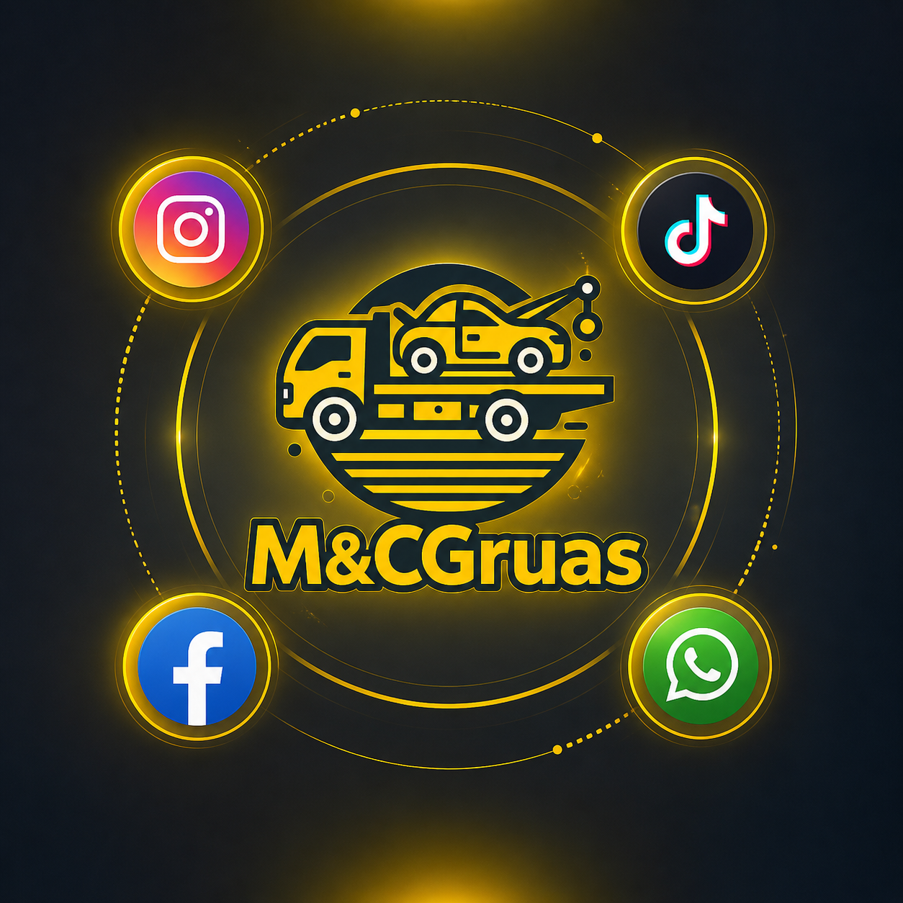

Publicamos registros visuales de traslados, cargues y atención en carretera.
Redes sociales
Una página para la presencia social y el contenido de la marca
Aquí reunimos TikTok, Instagram y Facebook para mostrar evidencia real del servicio, trabajos recientes y la actividad diaria de la marca.
TikTok y video corto
Reels, historias y fotos
Comunidad y visibilidad local

Canales sociales
Perfiles que ayudan a mostrar evidencia real del trabajo
Sigue los perfiles oficiales de la empresa para conocer servicios reales, novedades y contenido visual de las rutas y atenciones más recientes.
TikTok oficial
Videos recientes del canal oficial
Mira algunos servicios publicados por la marca y conoce de cerca el trabajo que realizamos en carretera.
 Servicio en acción
Servicio en acción
Contenido real para conocer cómo trabajamos
En nuestras redes compartimos servicios, recorridos y evidencias de atención para que cada cliente pueda conocer mejor el respaldo de M&C Grúas antes de solicitar una grúa.
Compartimos contenido relacionado con Cali, Bogotá, Pasto y los recorridos entre estas ciudades.
Desde los perfiles oficiales también puedes escribirnos para coordinar tu servicio.
Servicios recientes
Galería visual con algunos trabajos recientes
Una muestra visual de servicios recientes realizados por M&C Grúas en distintos recorridos y atenciones.